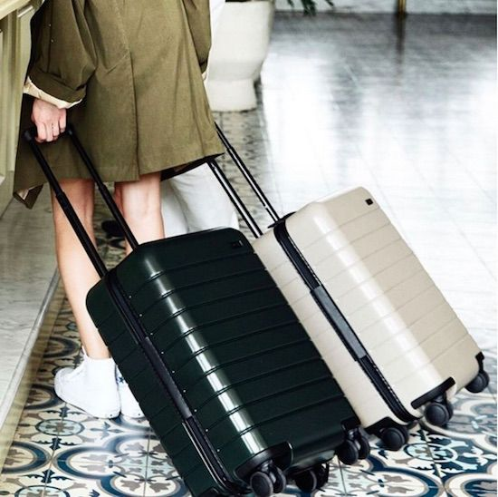

Equipaje de mano: Todo lo que necesitas saber
Restricciones y consejos para viajar sin ningún problema
Viajar ligero y eficientemente es clave para disfrutar de un viaje sin complicaciones. El equipaje de mano se ha convertido en una opción popular para aquellos que desean evitar las demoras y los problemas asociados con el equipaje facturado. Pero, ¿qué necesitas saber antes de empacar tu equipaje de mano? Aquí te ofrecemos algunas restricciones y consejos para que puedas viajar sin problemas.
Conoce las restricciones de la aerolínea:
Antes de comenzar a empacar, asegúrate de conocer las restricciones de tamaño y peso impuestas por la aerolínea con la que vas a volar. Cada compañía tiene sus propias políticas en cuanto al tamaño y peso máximo permitido para el equipaje de mano. Verifica estas regulaciones para evitar sorpresas desagradables en el aeropuerto.
Verifica las restricciones de líquidos:
Las normas de seguridad aeroportuaria limitan la cantidad de líquidos que se pueden llevar en el equipaje de mano. Por lo general, los líquidos deben estar en recipientes de 100 ml o menos y colocados en una bolsa transparente con cierre hermético. Familiarízate con estas restricciones y organiza tus artículos de tocador de manera adecuada.
Organiza tus pertenencias de forma eficiente:
Maximiza el espacio de tu equipaje de mano organizando tus pertenencias de forma eficiente. Utiliza organizadores de equipaje o bolsas de compresión para mantener todo ordenado y reducir el volumen. Enrolla tu ropa en lugar de doblarla para ahorrar espacio y evitar arrugas. Utiliza compartimentos y bolsillos para mantener tus objetos personales fácilmente accesibles.
No olvides los elementos esenciales:
Asegúrate de llevar contigo los elementos esenciales en tu equipaje de mano. Estos pueden incluir documentos importantes, medicamentos, cargadores, auriculares, una muda de ropa adicional y artículos de higiene personal. Anticipa cualquier necesidad durante el vuelo y asegúrate de tener lo necesario a mano.
Ten en cuenta las regulaciones de seguridad:
Recuerda que, al pasar por el control de seguridad, deberás sacar tus dispositivos electrónicos, líquidos y objetos metálicos de tu equipaje de mano para que sean escaneados por separado. Prepárate con antelación para un proceso de seguridad más rápido y sin contratiempos.
Protege tus objetos de valor:
Asegúrate de proteger tus objetos de valor, como dispositivos electrónicos, dinero y documentos importantes. Utiliza una riñonera o una bolsa de seguridad para mantenerlos cerca de ti durante todo el viaje.
Prepárate para posibles cambios:
Aunque hayas empacado cuidadosamente tu equipaje de mano, siempre existe la posibilidad de que los agentes de seguridad o la aerolínea soliciten que se verifiquen ciertos artículos. Mantén la calma y coopera con las instrucciones que te den. Estar preparado mentalmente para posibles cambios evitará frustraciones innecesarias
Viajar con equipaje de mano puede ser una experiencia conveniente y libre de estrés si te informas y te preparas adecuadamente. Conoce las restricciones de la aerolínea, organiza tu equipaje de manera eficiente y lleva contigo lo esencial. Así estarás listo para disfrutar de tu viaje sin preocupaciones ni contratiempos.
Buen viaje!
Azul